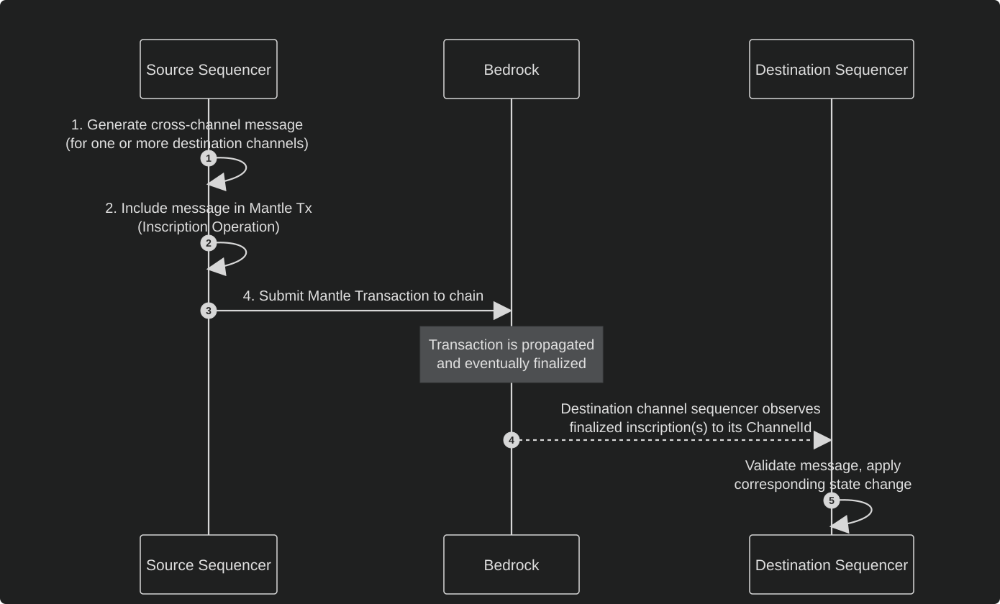
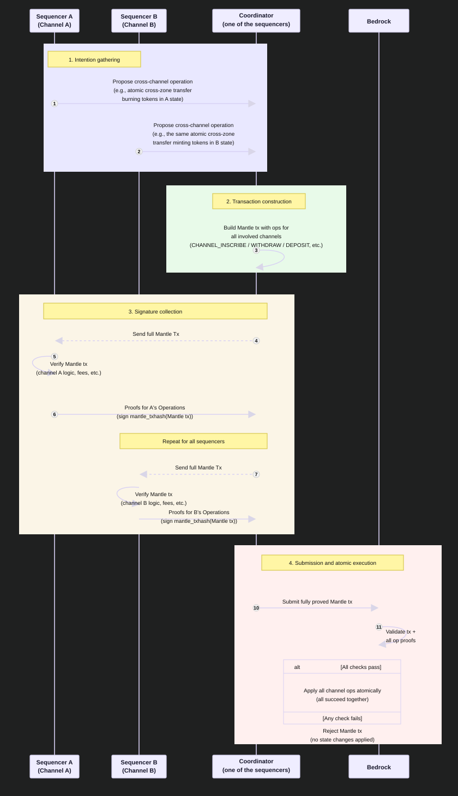

TEMPLATE-CROSS-CHANNEL-MESSAGING
| Field | Value |
|---|---|
| Name | [Template] Cross-Channel Messaging |
| Slug | 206 |
| Status | raw |
| Category | Informational |
| Editor | Thomas Lavaur thomaslavaur@logos.co |
| Contributors | Filip Dimitrijevic filip@logos.co |
Timeline
- 2026-07-27 —
628684e— docs(blockchain): fix CHANNEL_DEPOSIT execution, block limits and storage market formatting (#381) - 2026-07-03 —
709cf7f— Bedrock-RFC: Remove Concept of a Session (#365) - 2026-05-28 —
d45eed2— Chore: mirror blochain specs into github/mdbook (#347)
Revisions History
| Version | Changes | Date |
|---|---|---|
| 1.0.0 | Initial version. | 2026-03-31 |
| 1.1.0 | [RFC] Enforce NoteId uniqueness. | 2026-04-24 |
| 1.1.1 | [RFC] Simplify Mantle Transaction and Refactor Ledger Operations | 2026-05-06 |
| 1.2.0 | Align the atomic transfer example with the CHANNEL_DEPOSIT execution consuming its inputs and re-creating them in the destination channel. | 2026-07-27 |
Introduction
This document outlines the cross-channel messaging framework. A channel is a reserved identifier where only authorized keys can post messages on-chain, while anyone can read them. Cross-channel messaging allows different channels (including channels representing a Zone) to communicate and coordinate actions (such as Zone state transitions), enabling interoperability while maintaining security and decentralization.
Reference: Mantle.
Objectives
The primary objectives of this framework are to:
- Enable secure communication between different channels without compromising decentralization.
- Support both synchronous and asynchronous messaging patterns to accommodate different use cases and trust assumptions.
- Provide a standard message format while allowing flexibility for custom implementations.
- Provide atomicity guarantees for cross-channel operations when required.
Requirements
The cross-channel messaging framework must satisfy the following requirements:
- Synchronous operations must provide atomicity guarantees (all-or-nothing execution).
- Asynchronous operations must handle finality periods correctly.
- The framework should be flexible enough to support various channel implementations.
Overview
Cross-channel messaging allows different channels to interact and coordinate. The framework supports two distinct messaging modes.
- Asynchronous Messaging: Channels send messages to each other without requiring real-time and/or off-chain coordination. The receiving channel waits for the sending channels message to achieve finality on the chain before processing it. This approach minimizes coordination overhead but introduces latency due to finality requirements.
- Synchronous Messaging: Multiple channels coordinate to include their messages in a single Mantle Transaction. All messages in the transaction either succeed or fail together, providing strong consistency guarantees. This requires off-chain coordination between sequencers but enables use cases like atomic Zone state transitions. Since each Inscription Operation proof is a signature of the entire Mantle Transaction hash, the signature cannot be reused in a different context, for example, posting an Inscription alone after signing it as part of a coordinated transaction.
| Pros | Cons | |
|---|---|---|
| Asynchronous messaging | - Simple coordination model. - Channels operate independently. - Higher decentralization (no trusted coordinator). | - Higher latency due to waiting for finality. - No atomicity across channels (possible partial failures). |
| Synchronous messaging | - Strong atomicity guarantees across channels (all-or-nothing). - Lower end-to-end latency vs waiting for async finality. - Better suited for cross-channel financial operations (atomic swaps, cross-channel transfers). | - Requires off-chain coordination between sequencers. - Depends on availability of all participating sequencers. - More complex orchestration and implementation. |
The coordinator typically pays fees and must be trusted for timing of submission. Channel designers should implement mechanisms if they want to share these fees, either by:
- Requesting to cover a part of the coordinator's fee costs as part of the operation (e.g., including fee reimbursement in a Zone's state transition logic).
- Establishing external fee recovery protocols where the coordinator is compensated through off-chain agreements or separate on-chain transactions.
- Using a shared note to pay using a threshold Eddsa25519 public key.
Use Cases
Channels should choose between synchronous and asynchronous messaging based on their requirements:
Use Synchronous Messaging when:
- Atomicity is required (operations must all succeed or all fail).
- Low latency is important (faster than waiting for asynchronous finality).
- Coordinating sequencers have established trust and communication pathways.
- The use case justifies the additional coordination complexity.
Use Asynchronous Messaging when:
- Operations can be processed independently.
- Simplicity and decentralization are prioritized over latency.
- Sequencer coordination is difficult or undesirable.
- The application can handle eventual consistency.
Message Flow
Cross-channel messaging follows this general flow:
- The source channel's sequencer generates a message for one or more destination channels.
- The message is included in a Mantle Transaction (through an InscriptionOperation):
- For asynchronous messaging: the channel's sequencer includes it in a separate transaction.
- For synchronous messaging: a coordinator gathers Operations from different channel sequencers and includes them in a common transaction.
- Once the Mantle Transaction is built, each channel sequencer signs their Operation using the Mantle Transaction hash as input.
- The transaction is submitted to the chain:
- For asynchronous messaging: by the channel's sequencer.
- For synchronous messaging: by the coordinator.
Protocol
Asynchronous Messaging
Asynchronous messaging allows channels to send messages to each other without requiring real-time and off-chain coordination between sequencers. This mode prioritizes simplicity and independent operation over low latency and atomicity.
Message Format
We provide a recommended data structure for formatting messages in Inscriptions. This structure uses compact binary encoding to minimize on-chain storage costs while clearly indicating the message recipient:
Inscription = MessageCount *Messages
MessageCount = Byte
Messages = Destination MessageLength *Message
Destination = ChannelId
MessageLength = UINT64
Message = UINT32 *Byte
ChannelId = 4 *Byte
The structure consists of:
- MessageCount: A single byte indicating the number of messages in this Inscription (supports up to 255 messages).
- Destination: A 32-byte number identifying the target channel.
- MessageLength: An 4-byte unsigned integer specifying the total length of all messages for this destination in bytes.
- Message: The actual message payload, prefixed by a 3-byte length field indicating the size of each individual message in bytes.
Note on Format Flexibility: This structure is not enforced by the blockchain. It serves as a recommended standard for interoperability. Channels can choose to:
- Parse messages themselves according to this format.
- Implement their own custom message formats based on specific requirements. However, following the recommended format ensures better interoperability with other channels in the ecosystem.
Processing Flow
The asynchronous messaging process follows these steps:
- Message Creation: The source channels sequencer creates a message according to the recommended format (or their custom format) and includes it in an Inscription within a Mantle Transaction.
- Transaction Submission: The sequencer signs the Operation and submits the Mantle Transaction to the chain independently.
- Finality Wait: The transaction propagates through the network and eventually achieves finality on-chain. This guarantee that this transaction wont be reverted due to a reorganization.
- Message Observation: Destination channels sequencers monitor the chain for messages addressed to their ChannelId. When a relevant message is detected and has achieved finality, the channel can safely process it.
- State Transition: The destination channel checks that the message is valid and publishes a corresponding state transition in its own Inscription.

Security Considerations
Asynchronous messaging relies on the finality guarantees of the underlying chain. Destination channels must:
- Wait for sufficient confirmation before processing messages to avoid issues with chain reorganizations. Channels can choose a specific probability threshold or wait for finality to achieve a 100% guarantee.
- Since the chain does not verify channels' Inscriptions, the destination channel must understand the source channel's logic to determine whether the message is valid.
Synchronous Messaging
Synchronous messaging enables atomic cross-channel operations by including multiple messages in a single Mantle Transaction. All messages either succeed or fail together, providing strong consistency guarantees across multiple channels.
Atomicity Guarantees
The atomicity property is crucial for use cases that require coordinated changes across multiple channels. Examples include:
- Atomic swaps: Trading assets between two zones where both transfers must succeed or both must fail. It involves executing a CHANNEL_WITHDRAW, a CHANNEL_DEPOSIT and two state transitions encoded as CHANNEL_INSCRIBE.
- Cross-channel funds transfers: Moving assets from one channel to another with guarantees that the asset is directly deposited to the other channel.
Without atomicity, these operations would be vulnerable to partial failures, leading to inconsistent global state.
Example of an atomic transfer
# Build the inscription that sends a transfer from Zone A to Zone B
sending = Inscribe(
channel=CHANNEL_ZONE_A,
inscription=b"Alice burns 5 tokens to send to Bob in Zone B",
parent=hash(PREVIOUS_ZONE_A_INSCRIPTION),
signer=sequencer_of_zone_a
)
# Build the inscription that receives the transfer from Zone A to Zone B
receiving = Inscribe(
channel=CHANNEL_ZONE_B,
inscription=b"Bob mints 5 tokens, received from Alice in Zone A",
parent=hash(PREVIOUS_ZONE_B_INSCRIPTION),
signer=sequencer_of_zone_b
)
# Sequencer of Zone A encodes the withdrawal from Zone A. The note leaves the
# channel keeping its NoteId, its value and its ZkPublicKey
withdrawal = ChannelWithdraw(
channel=CHANNEL_ZONE_A,
inputs=[zone_a_channel_note_id]
)
# The withdrawn note is deposited to Zone B, where it is consumed and
# re-created as a channel note under a new NoteId
deposit = ChannelDeposit(
channel=CHANNEL_ZONE_B,
inputs=[zone_a_channel_note_id],
metadata=b"transfer from Zone A"
)
# Build the transfer operation to pay the fees
transfer = Transfer(
inputs=[<sequencer_zone_a_note_id>],
outputs=[<change_note>]
)
# Wrap it in a transaction. Operations are executed sequentially, so the
# withdrawal must precede the deposit for the note to be spendable
tx = MantleTx(
ops=[Op(opcode=CHANNEL_INSCRIBE, payload=encode(sending)),
Op(opcode=CHANNEL_INSCRIBE, payload=encode(receiving)),
Op(opcode=CHANNEL_WITHDRAW, payload=encode(withdrawal)),
Op(opcode=CHANNEL_DEPOSIT, payload=encode(deposit)),
Op(opcode=TRANSFER, payload=encode(transfer))],
)
# Sign the transaction
signed_tx = SignedMantleTx(
tx=tx,
# Sequencer A is responsible for Zone A so it signs the Inscription and the
# Withdraw of Zone A, and proves ownership of the deposited note. Sequencer B
# only signs the Inscription of Zone B, as a Deposit is authorized by the
# owner of the notes it consumes and not by the destination channel.
# Note that the withdraw OpProof has a ChannelWithdrawOpProof structure
op_proofs=[Ed25519_sign(mantle_txhash(tx), sequencer_of_zone_a_sk),
Ed25519_sign(mantle_txhash(tx), sequencer_of_zone_b_sk),
[[Ed25519_sign(mantle_txhash(tx), sequencer_of_zone_a_sk)],[0]],
deposit.prove(zone_a_note_zk_sk),
transfer.prove(sequencer_of_zone_a_sk)]
)
# Send the transaction to the mempool
mempool.push(signed_tx)
The withdrawn note keeps the ZkPublicKey it carried while it was a channel note of Zone A, and the Deposit proves ownership of that key. Zone A must therefore control it when the transaction is built, either because the note was already assigned to one of its keys or by reassigning it with a CHANNEL_TRANSFER placed before the withdrawal in the same Mantle Transaction.
Signature Coordination
Synchronous messaging requires coordination between sequencers from different channels. The process works as follows:
- Transaction Construction: One sequencer (the coordinator) constructs a Mantle Transaction containing multiple channel operations for different channels. Each Operation represents an Inscription, withdraw or deposit for a specific channel or a transfer. In order to construct this transaction, the coordinator must gather the different intentions of the affected channels sequencers. For example, a Zone sequencer needs to inform another Zone sequencer that a user is transferring tokens so the receiving Zone can mint the token in its state.
- Signature Collection: Each participating sequencer receives the complete Mantle Transaction and verifies it. If all checks pass, the sequencer builds a proof for the Operations of its channel which includes the signature of the Mantle Transaction hash. The signature covers the entire transaction, ensuring that all sequencers approve the atomic Operations as a whole and preventing signature replay attacks.
- Coordination and Submission: The coordinator collects Operation proofs from all participating sequencers. Once all required proofs are gathered, the coordinator assembles the fully signed transaction and submits it to Bedrock.
- Atomic Execution: The chain validates the Mantle Transaction. If any validation check fails, the entire transaction is rejected and no state changes are applied. If all checks pass, all Operations are executed atomically.
Coordination Failure Handling: If coordination fails (e.g., a sequencer goes offline or refuses to sign), the atomic operation cannot proceed. The sequencers must either:
- Wait for the unavailable sequencer to return and complete the protocol.
- Abort the operation and potentially fall back to asynchronous messaging.
- Initiate a new coordination round with modified parameters. This coordination requirement is the main trade-off of synchronous messaging: it provides stronger guarantees but requires more complex orchestration and is susceptible to availability issues of the involved sequencers.

Security Considerations
Synchronous messaging introduces additional security considerations:
- While the coordinator cannot forge signatures, they control transaction submission timing. Sequencers should implement timeouts and designate backup coordinators in the case where the coordinator aborts or delays the posting of the transaction.
- The protocol's liveness depends on all participating sequencers being available and responsive.
- Sequencers must agree on fee payment as the coordinator is the only one paying for submitting the transaction. The fee construction is internal to the Channel sequencers and is out of the scope of this document.
And trust assumptions:
- Each participating sequencer is assumed to verify the entire Mantle Transaction and only sign transactions that are valid with respect to its own channel rules.
- The protocol does not enforce or verify this behavior on-chain.
- Bedrock does not validate channel-specific Inscription semantics. As a result, correctness of cross-channel operations depends on off-chain verification by sequencers.